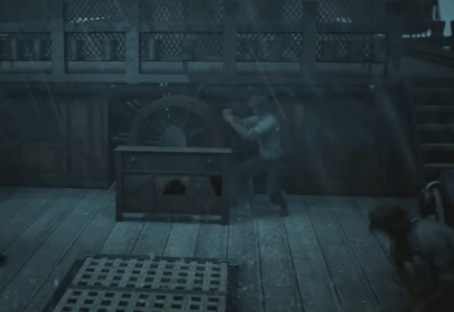

"Ketenangan" Sejenak

Aku memutuskan untuk melihat keadaan sekitar di dek atas. Aku melihat Para kru yang sedang tidak beristirahat
sibuk menahan barang-barang agar tidak terlempar ke laut. Ada juga yang sibuk
menarik tali layar, ataupun mengencangkan tali tiang layar, mereka berusaha sekuat tenaga untuk menahan agar tiang layar tidak patah walaupun diterpa badai.
Bahkan ada yang berusaha sekuat tenaga untuk menahan kemudi, agar kapal tetap berlayar sesuai arah tujuan.
Walaupun situasi ini terkesan kacau, sebenarnya ini merupakan kondisi yang relatif tenang bagi kami para kru kapal perang. Mengingat hal yang jauh
lebih buruk mungkin saja terjadi.